风好大[白眼]
我怕疼可以把我纹在我儿子身上吗[微笑]
第一次吃冰淇淋 第一次拉粑粑 第一次吃柠檬 第一次走路 第一次上学 第一次去游乐园 第一次跑步 第一次喝可乐 第一次哭 第一次笑 第一次掉牙 第一次换牙 第一次。。。。。身上位置不够咋办[尬笑][尬笑][尬笑][尬笑]
老师！！我能在2029或者2030约到您吗[流泪]
这位妈妈对儿子的爱可以理解！但是，我家儿子今年17岁，如果他看到我的手臂上纹着他三岁吃冰淇淋的照片真的会分分钟社死[笑哭]
第一次吃冰淇凌[发呆]这么隆重的吗
长大后每当儿子气到自己的时候，抬手看看他三岁时的样子
听说过天才吗？天才只是我的门槛罢了
只有在特定的角度才能出现这种效果，别想了
嘴上说的天才，却有一大堆
仙道杀招-千解
坏了，这短剧冲我妈来的[九转大肠]
笑死我了砍一刀
哎嘛明明摘耳环那么纯情，但我感觉好欲[舔屏]
王权弘业：等你记忆恢复的 我要贴在你耳边说你是怎么脱我衣服的
就想知道淮竹恢复记忆之后想起这段要咋办[不看]
这仪态，这姿势，绝了！不要那些弓腰驼背的[赞][赞][赞]
淮水竹亭对于漫粉来说很失望很生气，可是对于剧粉来说，真的很爱啊[流泪]两个主角都很温柔
可是...我是第一个过去的啊 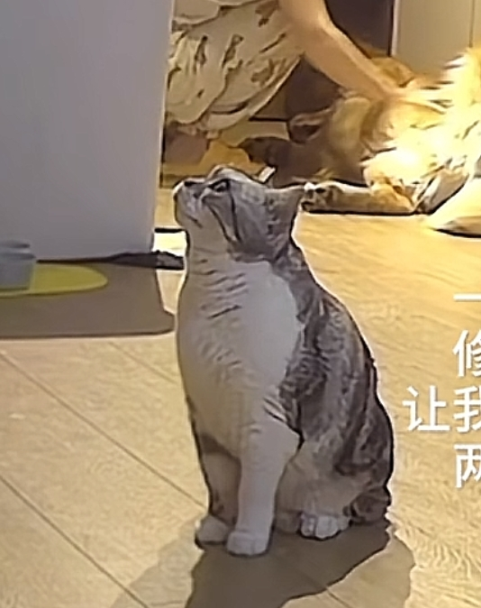
猫：45度仰头是为了不让自己流眼泪[流泪] 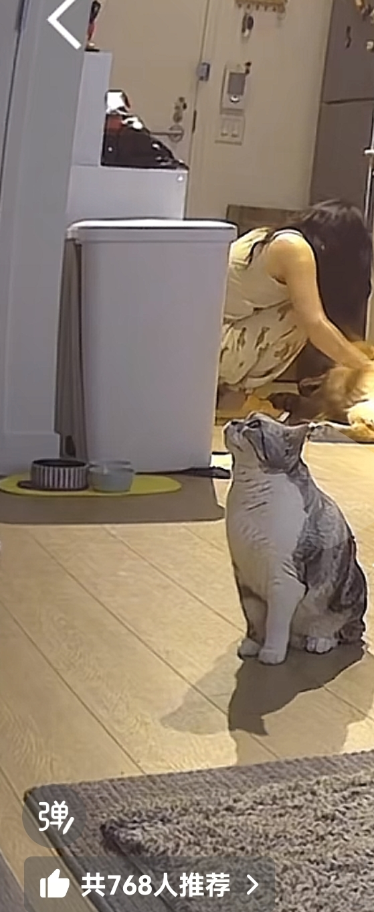
你连主页介绍都没有它
这个画面 谁懂[流泪]
小猫有另一个账号你们不炸了吗[捂脸]
小猫咪在一旁假装不在意，实际耳朵一直在偷听，眼睛一直在偷瞟。 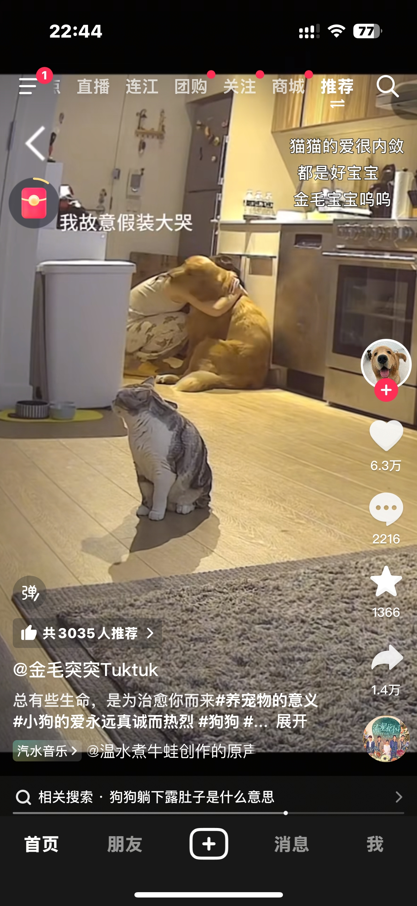
凭什么后来者居上，因为前者不争不抢 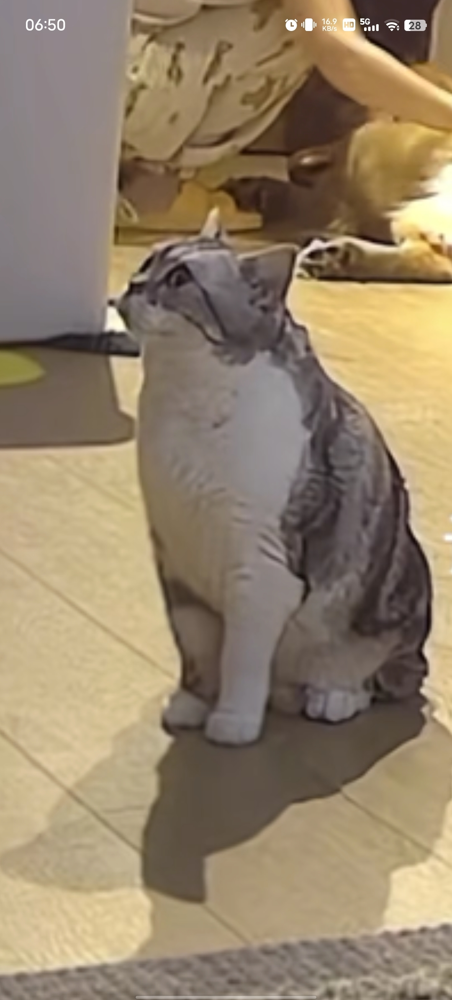
猫：好像是我先来的吧[逞强落泪] 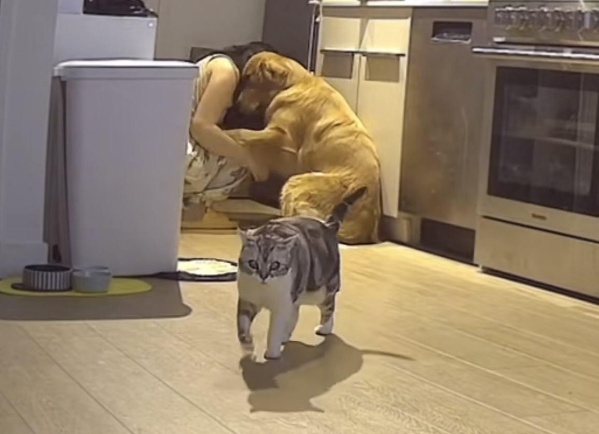
[捂脸]其实就是狗狗关心，猫咪真的只是好奇
咪咪：那我就当默默守护你的小天使吧 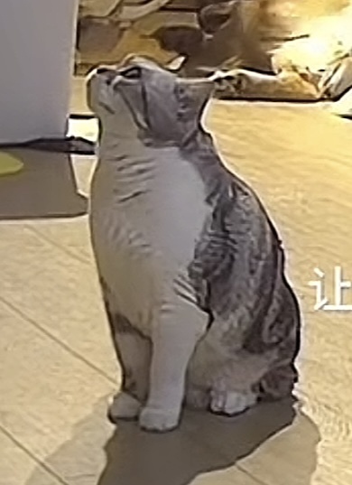
可是我真的就是很需要狗狗这种热烈的爱[流泪]
现在终于理解老年人看到保健品是什么感觉了[泪奔]
那来一盒呗，万一是大师开光呢？[憨笑][赞]
今早去看“苍茫的天涯是我的爱”，开场半个小时，直接走人
那个水饺皇后，还没看我就大概能知道剧情走势，一点看的想法都不会有
兄弟们，把你们的布鲁斯艾特出来[看]
人性 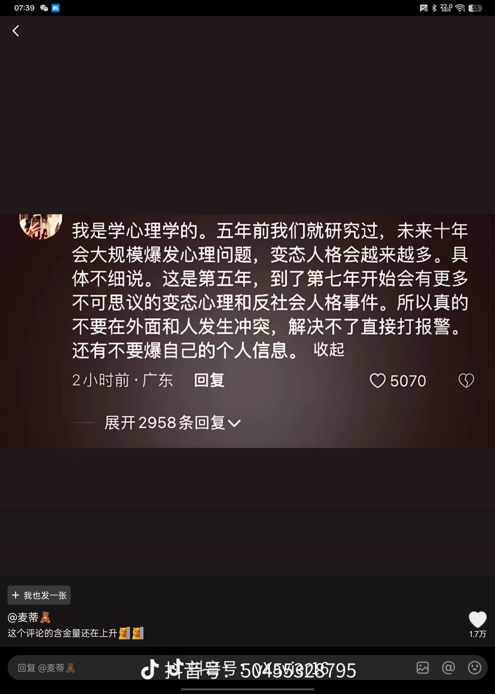
最近的报复性事件越来越多了……全国各地 人的心理越来越扭曲了
冯叔 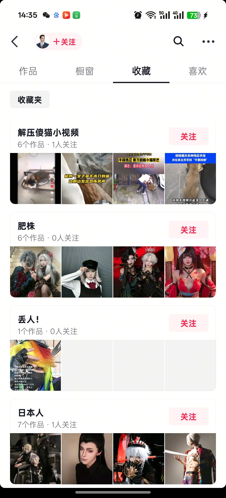
虐猫的原因是因为虐人违法[捂脸]
这不是喜不喜欢猫的事了，这是真的有精神病啊[石化]
打过王者荣耀的人应该都知道人性的多样性吧[捂脸]
她在死前没法移动，吃了地上掉下来的树叶，她只是想活下来
真的很可怕 那是一个活物啊 居然可以在她怀孕的情况下生生砍下她的四肢 真的很吓人 感觉已经不是单纯的虐待了 再这样下去肯定会不满足于虐杀小动物 很有可能还会对人类造成一定的安全隐患 太血腥太暴力了 一个正常人是怎么做到砍断四肢丢到火车站的啊 真不敢想她是怎么撑过来的 承受着这么大的痛苦 被救了却还是逃不过一死
人渣们不要说“那咋了”，猫被砍断四肢，人渣也可能变成人彘
我住浦东新区 我隔壁邻居每天下班回来第一件事就是打他的猫 我一直不知道我以为打他老婆 因为他动作太大我一直以为是他老婆 有一天我拿外卖我才知道是猫 反正我每天都担惊受怕 我感觉他他心里有问题 我话也不敢给他说 每天我睡着了 他打猫又把我吓不敢睡觉 我男朋友有几天去北京了 我说我想报警 可能是家暴 我男朋友说他心里有问题他不在 怕我出事 当天晚上隔壁邻居就敲我门 问我是不是拿他凳子了 我门不敢开说没有 他从早上敲门 敲到晚上 我下班回来走路都悄悄的走回来准备睡觉 他就开始敲门 叫我开门他要看看 有没有 我打电话房东才解决问题 一个礼拜样子他就搬家了 我当时一下子心里开心完 但是他的小猫咪不知道怎么样了 我也害怕 他非常恐怕 又不敢惹他 我又怕他报复我 不是我不帮小猫[流泪] 他真的很可怕 我也一个人 男朋友也回北京了 可怜小猫[流泪] 我是不是太没有勇气了 可是我真的很害怕他报复我[流泪]
[暗中观察]以前垃圾桶里看到有五只小奶猫，马上回去喊朋友一起拿包和毯子来救，回来发现被人倒了开水全部弄死了……
日本旅游看见的，希望还是成立动物法 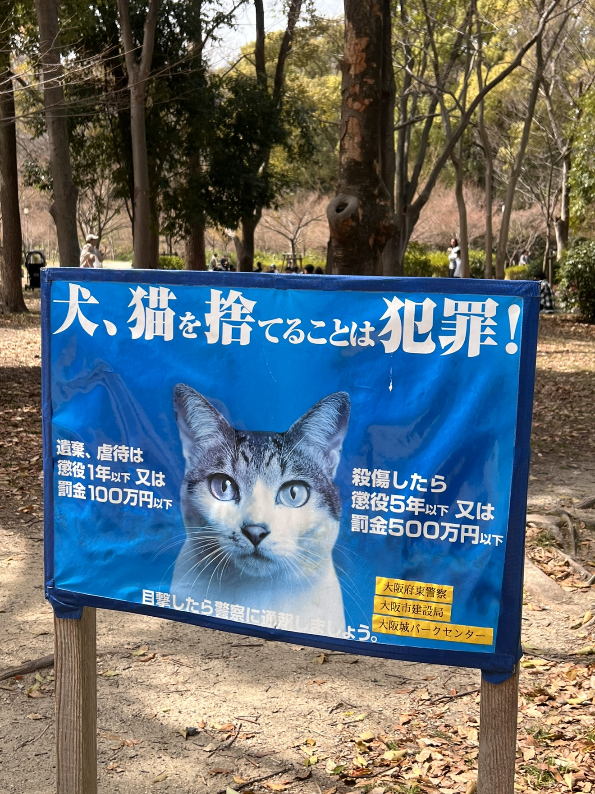
？？？？？？？？？？？？？[疑问] 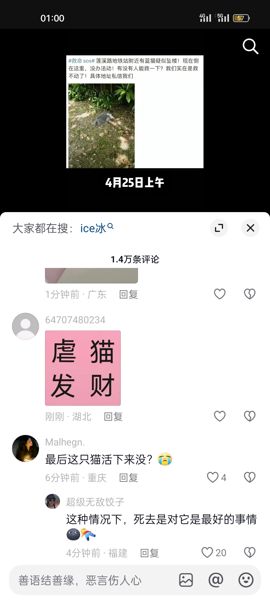
我在网上看到一个人养了一只母猫，然后母猫生了小猫，他把小猫剁成肉泥喂给了母猫 [流泪] 这个世界怎么了啊
我的第一反应是如果蓝猫的原主人知道了得多心疼呀，代入进去心都快碎了[流泪][流泪][流泪]
不敢看完但是发声 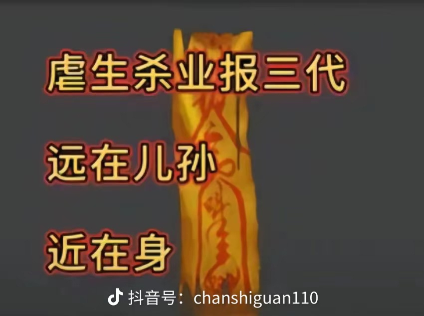
你所有遭的罪都是那个男人带给你的[泣不成声]
看到车的那一刻，眼睛和鼻子好酸，眼泪就出来了，谢谢你，正是因为这个社会有这些纯粹正直、付出的人，我们中华民族才依然立于不败之地！
我高中的教官也是，认识他的时候19岁，我们高一十五十六岁。我们高考结束那天，还请他来吃饭了，他跟我们玩了一个晚上，结果同年8月牺牲了…… 现在我们都二十七八了，他永远在22岁了[流泪][流泪]我感觉在我的学生生涯里，他们都给我们上课最好的一课[流泪][流泪][流泪]
去时戴红花，归来盖白布！无悔少年时，视死忽如归！
以为写的是情场，结果是职场
还有那个“听说你还在搞什么原创，搞来搞去好像也就这样”之前特别喜欢听素颜，直到有次做建模，刚被老师骂，回来边听歌边做听到这句直接破大防开始尖叫[憨笑]
哈哈哈哈哈哈，他说好的！哈哈哈哈哈哈哈哈哈哈哈哈哈哈哈，他居然说好的！哈哈哈哈哈哈哈哈哈哈哈哈他居然回我好的？哇喔，哈哈哈哈哈哈哈哈哈哈哈哈……… 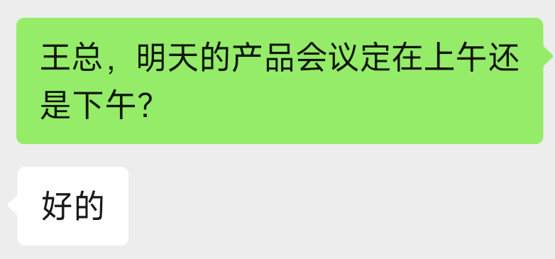
人在无语的时候真的会笑[暗中观察] 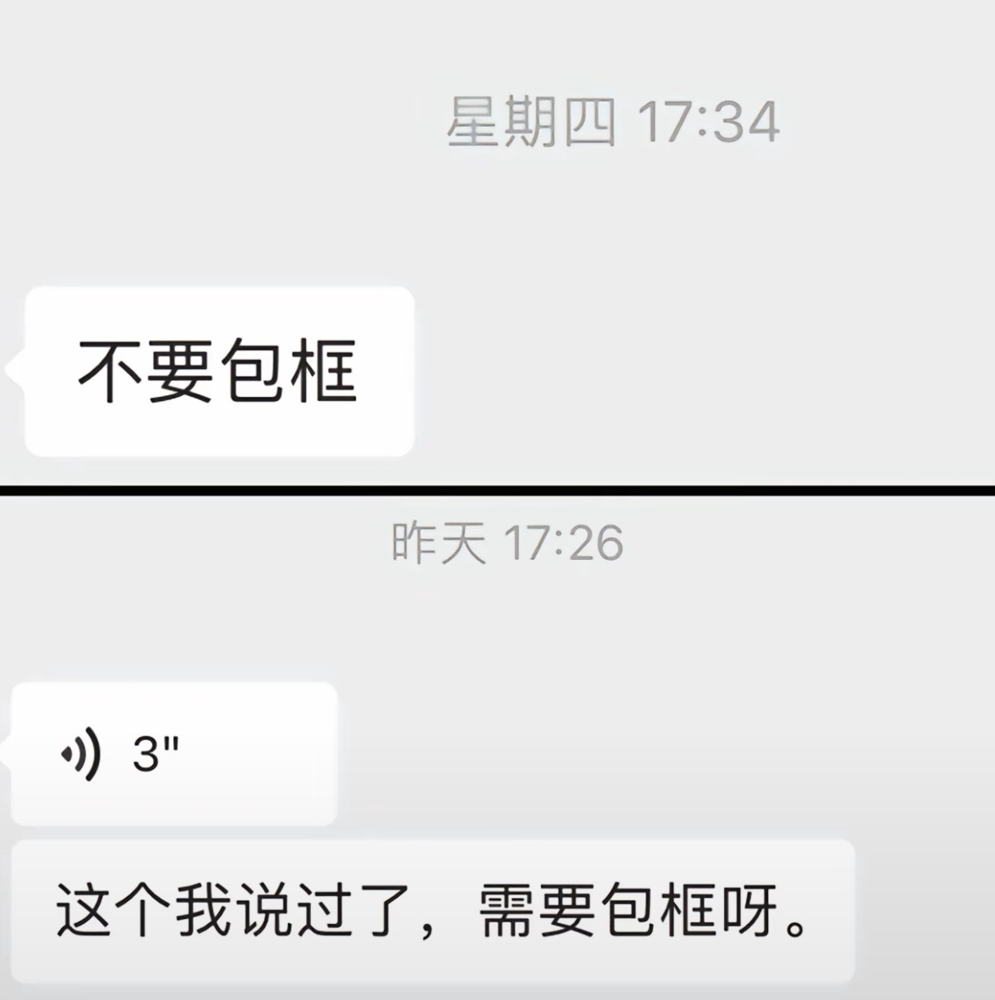
《我们背对背捅刀》
我每次都是，人和人的沟通有时候没有用[流泪]
[流泪]我问主任要第一版文稿还是第二版呢？ 他说挺好的[流泪][流泪][流泪] 真的是一字一句像圈套👊
牛马当久了 情歌都听不出来原来的味道了[大哭]
我和老婆商量好了，适时选择加大消费
什么时候降我择机适实请大家吃饭
刘禹彤：教练，我想减肥 教 练：瞧瞧给这孩子饿的都开始说胡话了，以后每天再加一餐[看]
Read more: